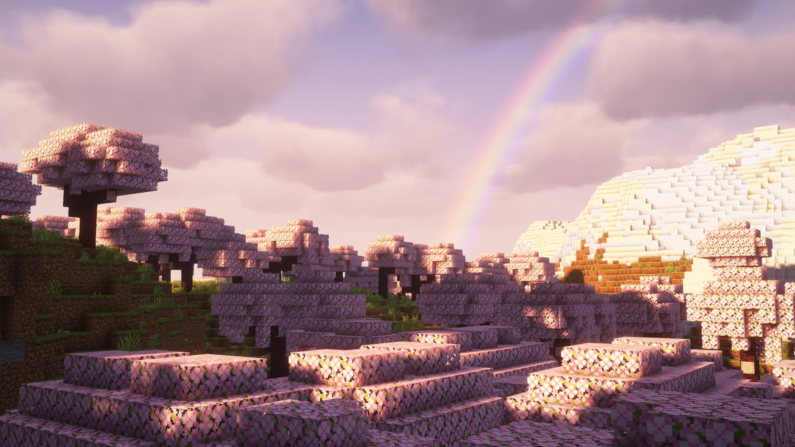
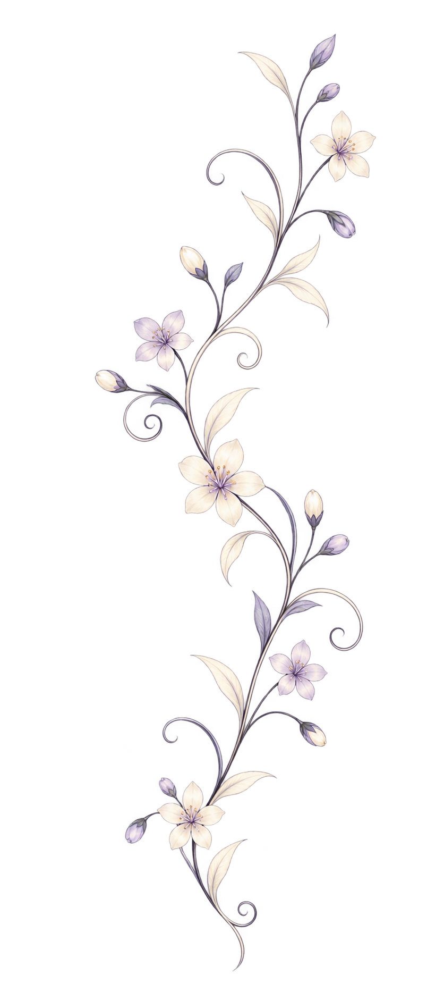
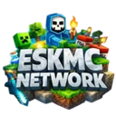
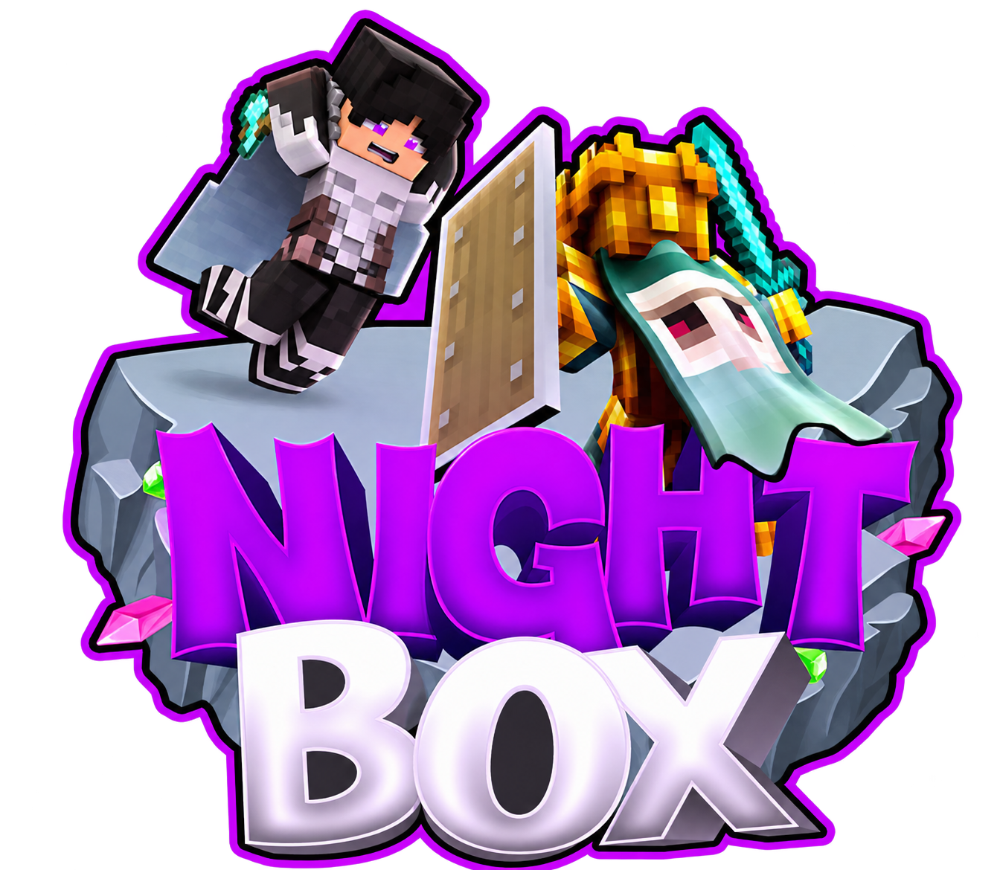
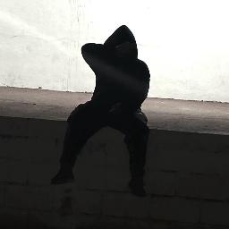

Juego limpio. Un staff que cuida tu servidor_servidor y tu comunidad
ScreenShare con criterio, moderación y coordinación del equipo de revisiones. Para cuidar a tus jugadores y tomar decisiones con evidencias.
CRITERIO CLARO. EVIDENCIA REAL. JUEGO LIMPIO.
FumandoMari / staff workspaceDemo
TU COMUNIDAD, EN BUENAS MANOS
Todo bajo control.
Siempre pendiente

UN MEJOR LUGAR PARA JUGAR
Cada bloque. Un equipo detrás.
Staff & SS Management
Servidores04 comunidades
Usuarios100+ por servidor
Protocolo100% documentado
Actividad recienteDATOS SIMULADOS
Revisión de ScreenShare completadaSS-024 · Evidencia adjunta
Resueltohace 2 min
Ticket de soporte atendidoT-018 · Consulta del servidor
Respondidohace 8 min
ScreenShare con criterio Protocolos transparentes Tu comunidad primero
SOBRE MÍ
Todo lo que un servidor necesita. Nada de lo que no.
Soy FumandoMari. Staff y SS Manager. Coordino revisiones y acompaño al equipo para que cada reporte se trate con criterio, respeto y evidencias.
01 — LO QUE HAGO
SCREENSHARE
Detecto trampas. Protejo el juego.
Reviso posibles trampas mediante una pantalla compartida acordada, con límites claros. Contrasto los hallazgos y documento las pruebas antes de comunicar una decisión.
Sesión de ScreenShareEJEMPLO
Un protocolo claro.
Consentimiento, revisión, evidencia y veredicto. Activa JavaScript para explorar las cinco especialidades.
sesion_screenShare.mp4Grabación de la revisión · ejemplo
PNG
evidencia_01.pngCaptura contextualizada · ejemplo
Veredicto con contexto
Hallazgos, pruebas y motivo de la decisión en un mismo lugar.
02 — TODO DOCUMENTADO
Reportes de ScreenShare profesionales.
Cada revisión incluye grabación, capturas y un resumen claro del veredicto. Todo documentado para que la administración tenga pruebas sólidas.
Evidencia organizada Decisiones justificadas
03 — UN MISMO EQUIPO
Coordino al equipo de SS. Unifico criterios.
Acompaño la formación del staff, organizo las revisiones y compruebo que los reportes incluyan contexto y pruebas. Un protocolo compartido ayuda al equipo a decidir con coherencia.
Objetivos compartidos Un equipo coordinado
# coordinación-staffCONVERSACIÓN SIMULADA
SCREENSHARE & STAFF
FumandoMari SS MANAGER 18:42
Equipo, dejé el reporte revisado y los pendientes del próximo turno. Coordinemos la segunda revisión antes de cerrar el caso.
reporte_SS-024.pdfEvidencia y veredicto
A
Administración 18:45
Revisado. Todo claro y documentado, gracias.
✓ 2
Un equipo informado toma mejores decisiones.
SCREENSHARE EN ACCIÓN
Así se ve una revisión. Paso a paso.
Un recorrido simulado del protocolo, con consentimiento y respetando la privacidad del jugador.
ScreenShare / protocolo guiadoSimulación de ejemplo
PASO 01 / 04
La confianza va primero.
Se explica qué se revisará y se solicita permiso. Los archivos personales quedan fuera del alcance.
Consentimiento informado
00:00
00:24RECORRIDO GUIADO
MISMO COMPROMISO. DISTINTO MUNDO.
Tu BoxPvP. Juego limpio.
04 — TU SERVIDOR, TUS REGLAS
Me adapto a tu servidor.
BoxPvP, SkyBlock o Prison: adapto los protocolos, los turnos y la organización del staff a las reglas, la economía y los objetivos de tu proyecto.
BoxPvP: combate, minería e intercambios; supervisión del progreso y del juego limpio.
CASOS RECIENTES
Detrás de cada revisión.
EXPERIENCIA EN SERVIDORES
Distintos servidores. El mismo compromiso.
Comunidades en las que he participado, aportando trabajo de staff y experiencia en ScreenShare.
SERVIDORES
04
COMUNIDADES
100+ usuarios
MI ENFOQUE
Staff & SS

Experiencia de staff100+ usuarios
BunderCraft
Mod · SS Coordinator
Experiencia de staff100+ usuarios

Eskmc
SS Manager
Experiencia de staff100+ usuarios
Lunarbox
Helper
Experiencia de staff100+ usuarios

Nightbox
Helper
RESEÑAS DE MI TRABAJO
La confianza se gana. Ellos cuentan cómo.
STAFF & COORDINACIÓN“
Un staff muy constante y activo, es confiable y comprometido a lo que hace. Tiene ganas de hacer lo que le gusta y se nota en su actitud, es muy útil y siempre puedes contar con él.
CheloOwner · BunderCraft Network
SS MANAGEMENT“
FumandoMari en EskMc fue un gran SS-Manager, no contábamos con el apartado del SS-Team (muy básico) y él lo mejoró absolutamente todo. La verdad, 10/10 como SS-Manager, muy dedicado y preciso. No comete errores y, si los comete, a la corta los mejora.

lanoche22Manager · EskMc
ADMINISTRACIÓN & EQUIPO“
Desde mi punto de vista, @FumandoMari realiza un trabajo impecable como administrador. En Minecraft maneja los servidores con total dominio técnico y seguridad, mientras que en Discord mantiene la comunidad ordenada, bien estructurada y con una moderación impecable. Su liderazgo para dirigir al equipo, resolver problemas con rapidez y mantener cualquier proyecto funcionando al máximo nivel lo convierte en un pilar fundamental para la administración.